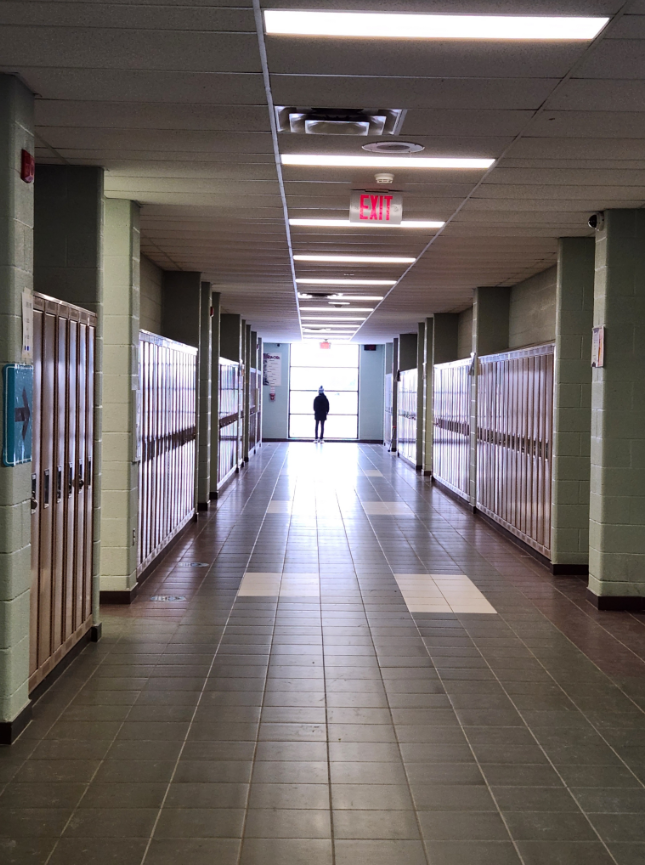

Faces in Places Assigment
This assignment was made for us to find objects in real life which look like faces. I honestly had a tough time completing this assignment, so I took the entire winter break trying to find faces and photographing them. Here's what I found.
While taking apart parts from my old PC, I found my PC’s optical drive container, which looked like a face. The top kind of look like hair, the big holes in the middle look like eyes, the rounded corners look like a moustache and the white space looks like a mouth.
This is a picture of the bottom of my wii remote controller. The holes on the side look like eyes and the port in the middle looks like mouth. It looks like it’s shocked. The wrist strap also looks like hair.
This image was taken in the back of a small art museum in toronto. It’s a valve meter looking very similar to a face. The two meters on the top look like eyes and the logo in the bottom looks like a mouth. It reminds me of a robot because of how it’s made of old metal and is shaped in a square.
This image was taken in the washroom of the boys changing room in J Clarke. The screws on the top look like eyes, the hanger looks like a really long nose and that metal at the bottom looks kind of like a mouth. The petal shaped object behind everything reminds me of the shape of a face.
This picture was taken in my house laundry room. These are the pipes for my laundry machine. The nozzles look like eyes, and the hole looks like a mouth. The 2 black pipes look like tears and the grey pipe looks like it could be a tongue. The face looks shocked and sad. The red text on the nozzles and the shape makes it look crazy.
This was another picture I took in a small art museum in toronto. It’s actually just a picture I took of a wall that had a hole in it. It had a spike design and beside it was a hole making it look like a face with a crop and rotation. The face looks shocked.
This is a picture of my heater taken in my room. The dials look like eyes, and the symbols look like tattoos. The led in the bottom looks like a tiny mouth.
This picture was taken in my house’s basement where the air ventilation system is. On the side I saw a bunch of screws and shapes and I realized this shape looks kind of like a face. This is a more simple looking face but i like how the mouth at the bottom is hollow making it look like it's shocked.
This image was taken in Toronto. The wheels on the cart looks like the eyes and the green reef looks like it's lips and the barrels look like teeth. It looks like the face people make when they hide their bottom lip under their teeth. The black center of the wheels make it look more like eyes.
This picture was taken in a grocery store. The two cameras look like eyes while the tiny dot looks like a mouth. It looks like the face is turning its neck to look at you.
Photo Composition Assignment
For this assigment we had to take 8 photographs for each photo composition technique and we had the oppurtunityto repeat 2 of our favourite one making 10 photographs total. Here's what I made.
Frames

This picture was taken inside Yayoi Kusama’s infinity mirror room in the AGO. In the exhibit there was a rectangular shaped structure with a hole inside of it looking like a kaleidoscope. This uses frames since the mirror is used as a frame to center my face as the main subject.
Lighting
I took a picture in a room of the AGO. This room had lighting with special colours like blue. So under a blue light a took a picture of my shade. My shade is black while all the light surround it is blue, and beyond that is the standard orange-yellow lighting. This image also used space well, my shade and the outside could be considered as negative space while the lighting is positive space. Blue lighting also adds a cool, calming effect for photography.
Bird's Eye View
This picture was also taken in the AGO. I asked Abdullah to go down the stairs and with my phone i took a bird’s eye view shot of him. This uses Bird’s eye view because the picture is directly on top of him going straight down. It looks nice because here it’s a view from the top, which isn’t commonly seen.
Repetition & Pattern
This picture was taken at the AGO. I simply took a picture of the walls because I thought they looked interesting. It’s interesting how they repeated the same shape multiple times to create the wall. It’s both a repetition and pattern. It’s the same form multiple times.
Crop
In this image I took a picture of my chicken and waffles. In the first picture there was many distracting things in the background like packaging and cup. After cropping it focuses on the food and makes it look much better.
Depth of field
This image was taken in Toronto while walking to the food court in AGO. This uses a large depth of field since we have subjects in the front (the car) and subjects in the middle, (The cars and buildings) and we also have subjects in the background (the buildings behind everything) It’s used well in this image because now we’re able to see many things in just one image. There’s many things to find which makes it interesting and can be done well with a large depth of field)
Leading Lines

This image was taken in the hallways. I asked Abdullah to stand by the windows. This uses leading lines since everything points to his direction. The ground tiles, the ceiling tiles, the walls, the lockers, even the arrow. All these line guide us to the main focus of the image.
Rule of Thirds
For this image I asked my friends Danushan, Aman, and Aathes to come outside and let me take a picture of them. I asked one of my friends to climb on top of another so that he aligns with one of the points in the rule of thirds. The 2 kids on the left become the main subject of the picture since they take up more points.
Lighting (Repeat)
In this image I took a picture of my cat in my room with green LEDS. Lighting is used since the green leds make everything look very green. The green LEDs add a pop of colour and makes it very eye-catching and dramatic.
Patterns (Repeat)

In this image I took a picture inside a mosque where all the patterns of the carpet repeat. All of them point in the same direction and use the same pattern and design.